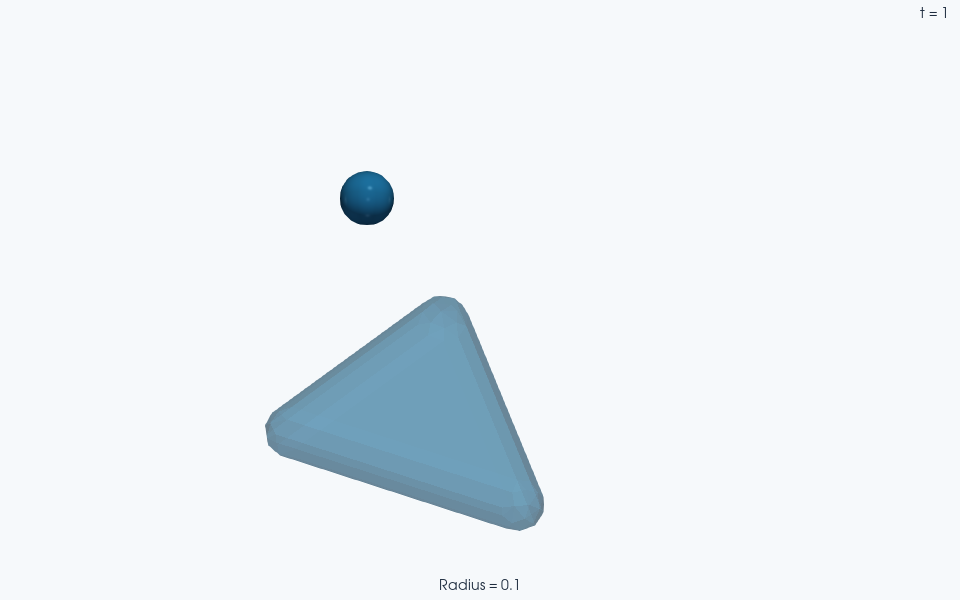

Note
Go to the end to download the full example code.
Facets (Triangular & Line Boundaries)#
A facet is a 2D line segment (2 vertices) or 3D triangle (3 vertices) used for flat walls, polygonal obstacles, imported meshes, or continuous contact surfaces on deformable particles. Facets reuse JaxDEM’s sphere broad-phase and rigid-body integration, while narrow-phase contact resolves exact point–triangle or segment–segment distances.
For an application importing an STL boundary mesh, see A rotating drum loaded from an STL mesh.
import tempfile
from pathlib import Path
import jax.numpy as jnp
import jaxdem as jdem
Creating Single Facets and Triangular Meshes#
Use add_facet() for one segment/triangle and
add_mesh() for a full mesh. Assign facets their
own species_id (e.g. 1 for facets, 0 for spheres) so a
ForceRouter dispatches sphere–facet and
facet–facet laws separately.
rigid=Truegroups vertices into one rigid clump (filled=Truefor a solid closed polyhedron;filled=Falsefor a hollow shell or open mesh).rigid=Falseleaves vertices independent (combine with a bonded model for elasticity).thicknesssets the Minkowski expansion radius stored instate.rad: faces shift outward bythickness, while edges and vertices become smoothly rounded pipes and spheres of radiusthickness.
empty_state = jdem.State.create(pos=jnp.zeros((0, 3)))
L = 1.0
tri = jnp.array([[L, 0.0, -L / 2], [-L, 0.0, -L / 2], [0.0, 0.0, L]])
state_single = jdem.State.add_facet(
empty_state,
tri,
thickness=0.1,
mass=5.0,
vel=jnp.array([0.0, -2.0, 0.0]),
species_id=1,
rigid=True,
)
print(f"Single 3D facet: N={state_single.N}, clump_id={state_single.clump_id}")
mesh_vertices = jnp.array(
[[0.0, 0.0, 0.0], [1.0, 0.0, 0.0], [0.0, 1.0, 0.0], [0.0, 0.0, 1.0]]
)
mesh_faces = jnp.array([[0, 2, 1], [0, 1, 3], [0, 3, 2], [1, 2, 3]])
state_rigid_mesh = jdem.State.add_mesh(
empty_state,
mesh_vertices,
mesh_faces,
thickness=0.1,
rigid=True,
filled=True,
mass=10.0,
species_id=1,
)
print(f"Tetrahedron mesh: N={state_rigid_mesh.N} (4 faces x 3 vertices)")
Single 3D facet: N=3, clump_id=[0 0 0]
Tetrahedron mesh: N=12 (4 faces x 3 vertices)
Force Routing and Sphere–Facet Impact#
Route sphere–sphere (0, 0), sphere–facet (0, 1), and facet–facet
(1, 1) interactions via ForceRouter.
SphereFacetSpringForce and
FacetFacetSpringForce are undamped elastic
normal springs driven by young_eff (contact thickness is read from the
facet vertices’ rad).
Launch a unit-mass sphere (radius 0.1) toward the fixed triangle (thickness
0.1); contact begins at height 0.1 + 0.1 = 0.2:
mat_table = jdem.MaterialTable.from_materials(
[jdem.Material.create("elastic", young=1e3, poisson=0.3, density=1.0)]
)
router = jdem.ForceRouter.from_dict(
S=2,
mapping={
(0, 0): jdem.ForceModel.create("spring"),
(0, 1): jdem.ForceModel.create("sphere_facet_spring"),
(1, 1): jdem.ForceModel.create("facet_facet_spring"),
},
)
impact_state = jdem.State.merge(
fixed_facet,
jdem.State.create(
pos=jnp.array([[0.2, 0.2, 0.8]]),
vel=jnp.array([[0.0, 0.0, -1.5]]),
rad=jnp.array([0.1]),
mass=jnp.array([1.0]),
species_id=jnp.array([0]),
),
)
impact_system = jdem.System.create(
state=impact_state,
collider_type="naive",
force_model=router,
mat_table=mat_table,
dt=0.0005,
rotation_integrator_type=None,
)
impact_state, impact_system = jdem.System.initialize(impact_state, impact_system)
state_stepped, system, (scene_states, scene_systems) = jdem.System.trajectory_rollout(
impact_state, impact_system, strides=jnp.asarray([0] + [50] * 40)
)
scene_title = "An elastic sphere bouncing from a fixed facet"
system.check_overflow()
overlap = jnp.maximum(0.2 - scene_states.pos[:, -1, 2], 0.0)
print(f"Max overlap: {float(overlap.max()):.4f}")
print(
f"Normal velocity: in={float(scene_states.vel[0, -1, 2]):.3f}, "
f"out={float(scene_states.vel[-1, -1, 2]):.3f}"
)
Max overlap: 0.0474
Normal velocity: in=-1.500, out=1.500
Selecting Contact Feature Queries#
Both facet laws allow disabling unused geometric queries statically (compiled out by JAX):
sphere_facet_spring:face,edge,vertex(in 2D, onlyedgeandvertexapply).facet_facet_spring:vertex_triangle,edge_edge,edge_triangle(in 2D, onlyedge_edgeapplies).
selective_router = jdem.ForceRouter.from_dict(
S=2,
mapping={
(0, 0): jdem.ForceModel.create("spring"),
(0, 1): jdem.ForceModel.create("sphere_facet_spring", edge=False, vertex=False),
(1, 1): jdem.ForceModel.create(
"facet_facet_spring", vertex_triangle=False, edge_triangle=False
),
},
)
print("Selective router created:", type(selective_router).__name__)
Selective router created: ForceRouter
VTK Visualization#
VTKWriter separates ordinary spheres
(spheres), facet vertices (facet_spheres), and facet faces
(facets). Note that the facets writer draws sheets at half-thickness
(rad / 2) while contacts use full Minkowski rad, so ParaView may show
a small visual gap of rad / 2 at contact:
tmp_dir = Path(tempfile.mkdtemp(prefix="jaxdem-facets-guide-"))
with jdem.VTKWriter(
directory=tmp_dir, writers=["facets", "spheres", "facet_spheres"]
) as writer:
writer.save(scene_states, scene_systems, trajectory=True, trajectory_axis=0)
print("Saved facet VTK output to:", tmp_dir)

ParaView rendering of this run’s VTKWriter output.
Saved facet VTK output to: /tmp/jaxdem-facets-guide-oq51bizk
Notes & Limitations#
Shared edges/vertices: Adjacent faces sharing a node do not repel each other, but a sphere contacting a shared edge can accumulate additive penalties from multiple incident faces.
Minimization & AD: At zero separation the contact normal is not always a smooth energy gradient; prefer force-only minimizers like
fire()for relaxing facet contacts.Manual connectivity edits: If you mutate facet connectivity arrays directly after creating a system, invalidate the collider via
jaxdem.colliders.invalidate_collider()before the next step.
Total running time of the script: (0 minutes 27.076 seconds)